Motion Builder文档
Motion Builder插件使用教程
一.Motion Builder软件下载
1.软件安装包：win64版本
请至钉钉文档查看附件《MotionBuilder_2025_en-US_setup_webinstall.exe》
二.安装Motion Builder插件
1.下载地址：
请至钉钉文档查看附件《MotionStudio_MoBu_22-25_Win64_v0.10.09_MSv1.8.59_Setup.msi》
2.安装步骤说明：
- 解压后，双击打开MotionStudio_MoBu_22-25_Win64_v0.10.09_MSv1.8.59_Setup.msi 安装包。
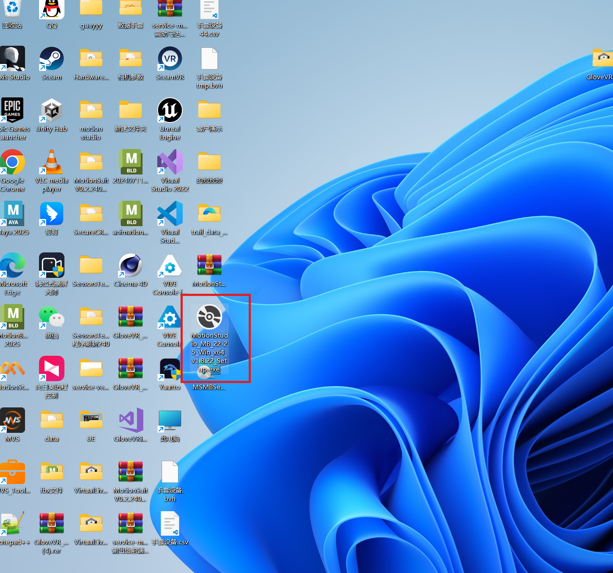{width="7.791666666666667in" height="7.290542432195975in"}
2.点击下一步
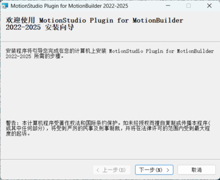{width="3.75in" height="3.0729166666666665in"}
3. 选择要安装插件的MotionBuilder 版本，目前支持MotionBuilder 2022、2023、2024和2025。然后点击下一步。
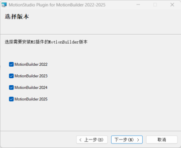{width="3.75in" height="3.0729166666666665in"}
4.选择插件安装位置，请选择MotionBuilder所在的目录。默认会选择Autodesk的默认安装目录。然后点击下一步（插件和软件要安装在相同目录下）
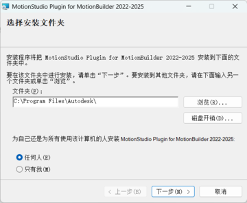{width="3.75in" height="3.0729166666666665in"}
5.点击下一步开始安装，在弹出的确认框中选择继续。
 {width="3.75in"
height="3.0729166666666665in"}
{width="3.75in"
height="3.0729166666666665in"}
6.插件安装完成，点击关闭
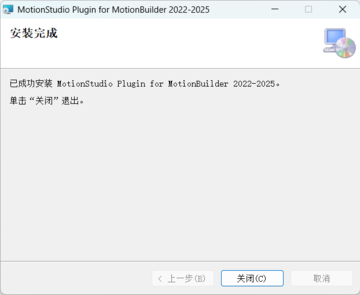{width="3.75in" height="3.0729166666666665in"}
三.Motion Buider插件使用说明
1.用插件自带的模型驱动数据
1）.打开Motion Buider软件（2022---2025版本均可，此文档演示的版本为2025）
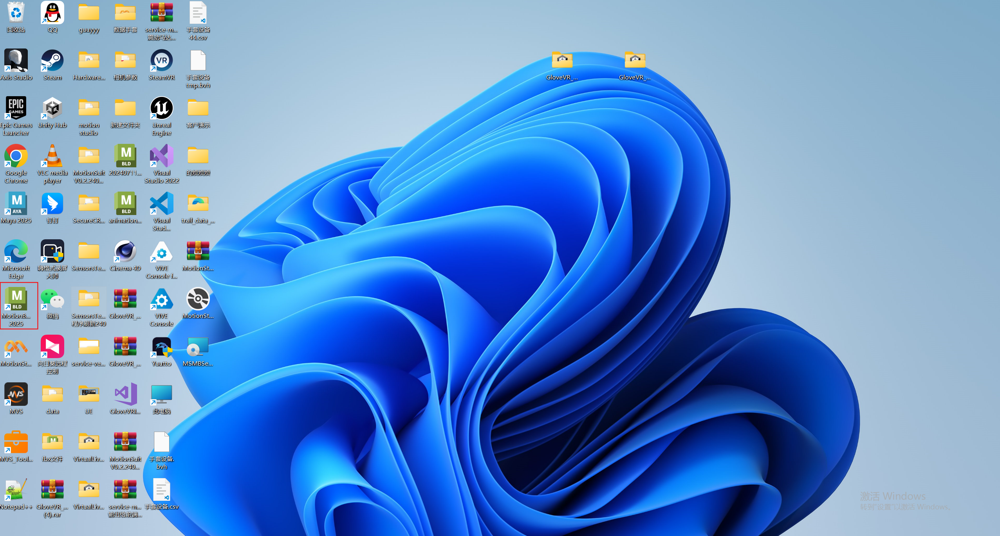{width="7.791666666666667in" height="4.182606080489939in"}
2）.导入MS插件
在页面右下角的Asset Browser 标签页中，选择左侧Templates→Devices，在右侧列表中找到Motion Studio Plug插件。鼠标拖拽该插件到主场景中即可完成导入。
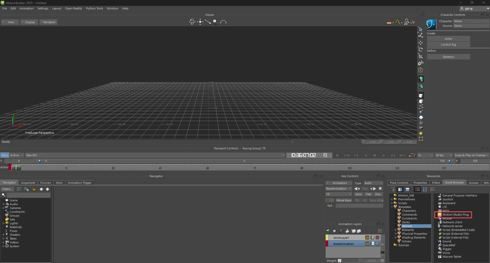{width="7.791666666666667in" height="4.188020559930009in"}
将Motion Studio插件拖到主场景中即可完成导入，点击Navigator---Devices中看到插件的界面。
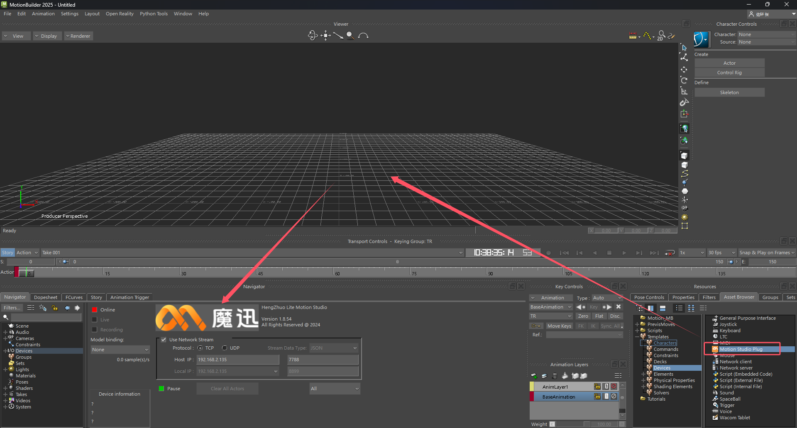{width="7.791666666666667in" height="4.188020559930009in"}
注意：如果在Devices中找不到Motion Studio Plug插件，可能是因为安装时选择安装路径有问题。此时需要先找到实际安装的插件路径。
例如，插件安装路径为D:\Program\MotionBuilder 2025\ 那么可以在该目录下看到如下内容，那么此时在Asset Brower左侧边栏空白处右键选择Add favourite path，然后选择D:\Program\MotionBuilder 2025\MotionBuilder 2025\bin\x64\plugins目录即可（确保此目录下有MotionStudioPlug2025.dll, 版本号根据所需版本号来，如2022，2023，2024等）
3）.连接Motion studio
点击查看是否勾选上Use Network Stream（若没勾选请手动勾选上）。根据MotionStudio中对应的数据广播设置，选择TCP或者UDP连接。
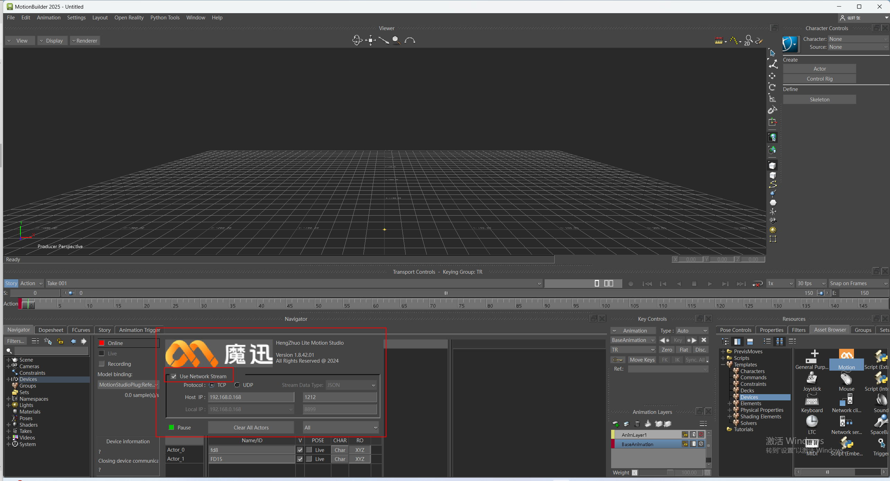{width="7.791666666666667in" height="4.215810367454068in"}
TCP连接：
使用TCP连接时，只需在Host IP中填入MotionStudio中的本地IP（默认为本机IP，若MotionBuilder运行环境与MotionStudio运行环境不在同一台电脑，则此处需根据MotionStudio的本地IP对应修改）及对应端口号。
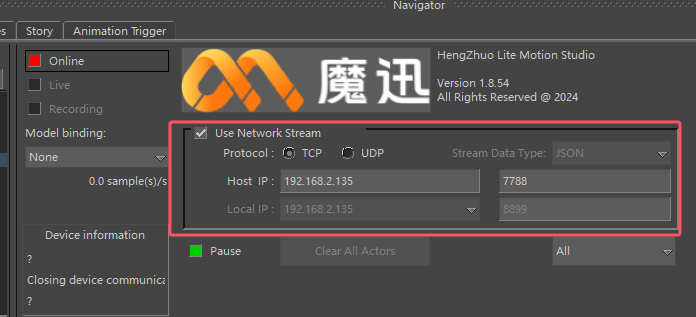{width="7.25in" height="3.3020833333333335in"}
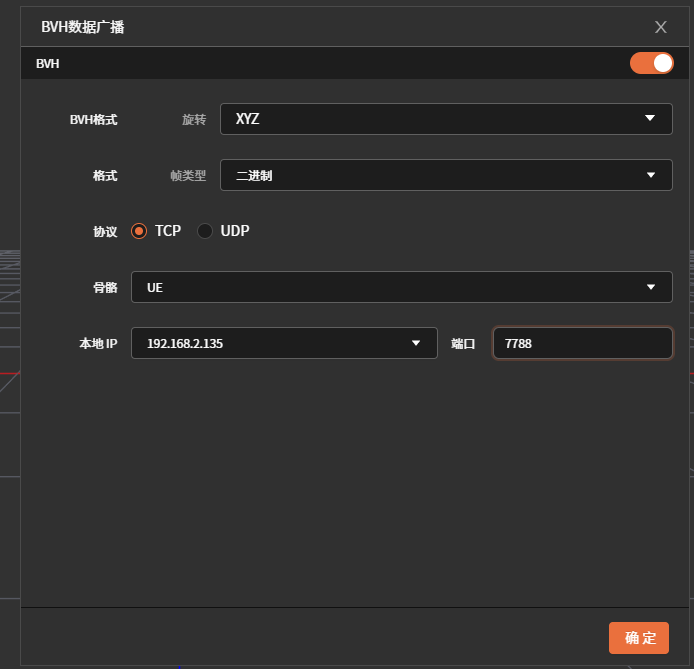{width="7.229166666666667in" height="6.96875in"}
UDP连接：
使用UDP连接时，需选择UDP，除以上操作外,还需要填写指定插件对应电脑的IP地址和端口号
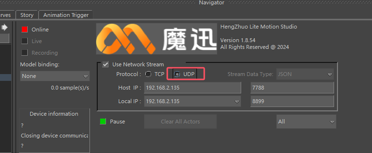{width="7.791666666666667in" height="3.2185181539807526in"}
在Motion Studio中的数据广播设置为UDP连接，并填写与插件相同的端口号（7788)。在目标IP处输入插件中的IP地址，并将端口设置为与插件中一致（默认为8899）
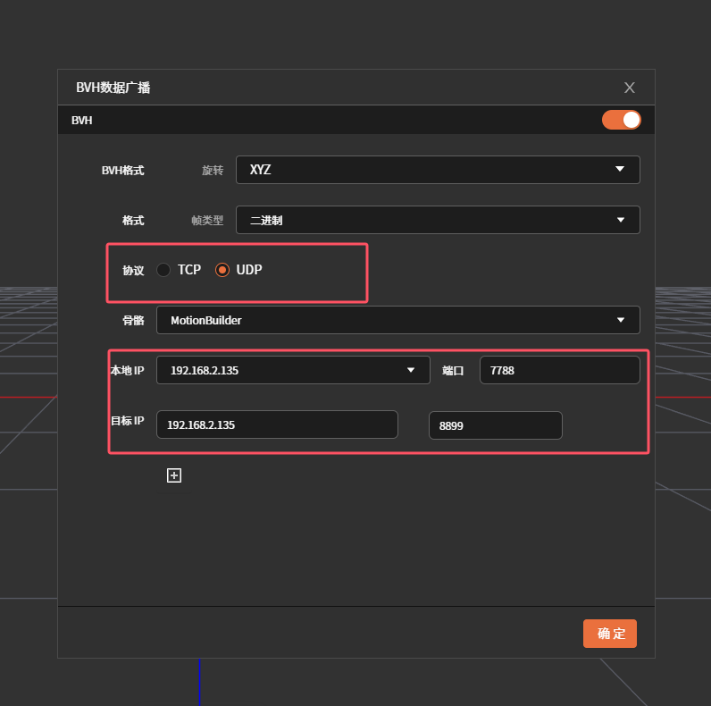{width="7.791666666666667in" height="7.732935258092739in"}
在MS做完姿势校准或播放录制文件后，并在插件中确认ip设置正确，点击插件左上角Online，即可连接Motion Studio数据广播(如果遇到MotionBuilder崩溃，请重启MotionBuilder再尝试一下）。Online按钮为绿色则表示连接成功。
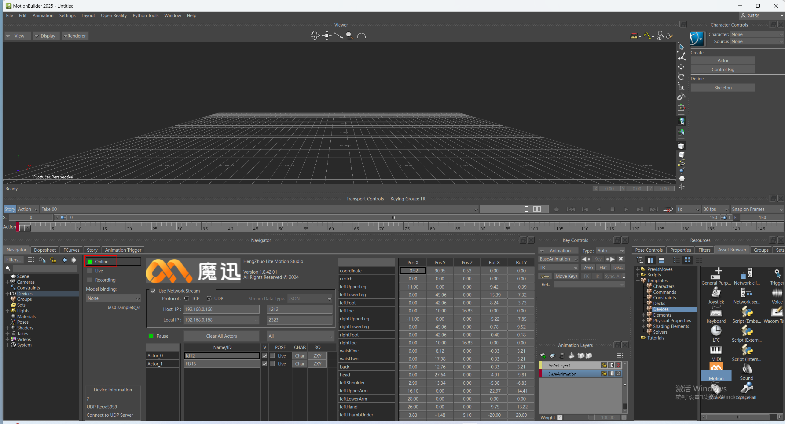{width="7.791666666666667in" height="4.215810367454068in"}
连接成功后，点击Live按钮，显示如下界面。
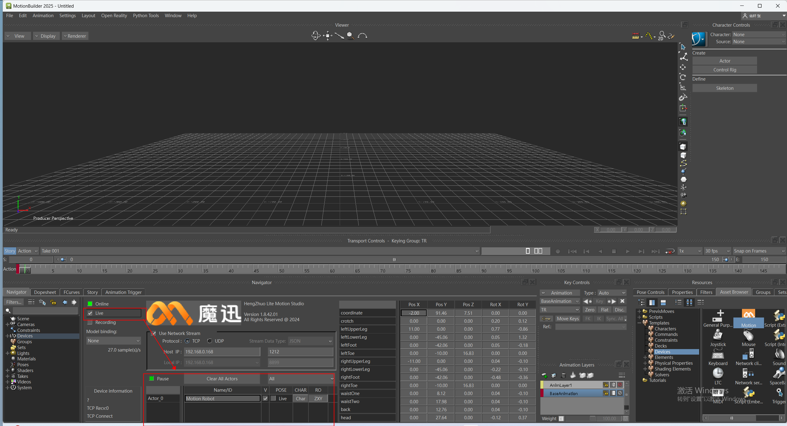{width="7.791666666666667in" height="4.215810367454068in"}
4）.绑定模型骨骼并创建角色定义
点击Model binding在下拉框中选择Create...
 {width="7.791666666666667in"
height="4.163556430446194in"}
{width="7.791666666666667in"
height="4.163556430446194in"}
选择框中自动显示Motion studio Reference,并在场景中显示角色骨架（多设备：MS连接几套设备，就显示几个角色骨架）
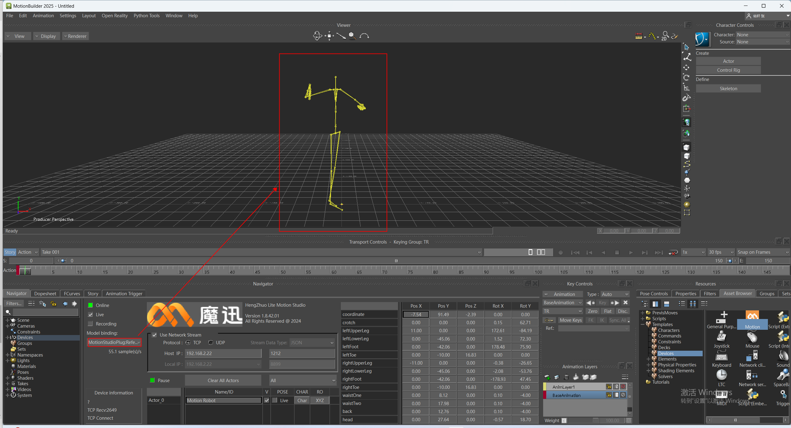{width="7.791666666666667in" height="4.215810367454068in"}
5）.绑定并直接驱动角色模型
插件已经包含了1个示例模型，可以在AssetBrowser→Tutorials中找到MS_Robot这个模型。
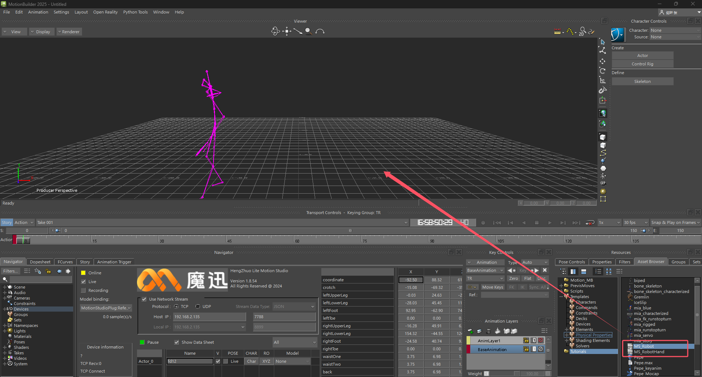{width="7.791666666666667in" height="4.188020559930009in"}
接下来将以这两个模型为示例，选中MS_Robot.fbx这个文件，将此模型拖入到场景中。在拖入的过程中会有FBX Open或者FBX Merge的选项（选择FBX Open将创建全新场景，而FBX Merge将会新拖入的模型合并到场景）。
因此，在导入MS_Robot.fbx后，需要选择FBX Merge→\<All Takes>选项（如果动捕场景中有多名角色，通常需要导入多个角色模型）。
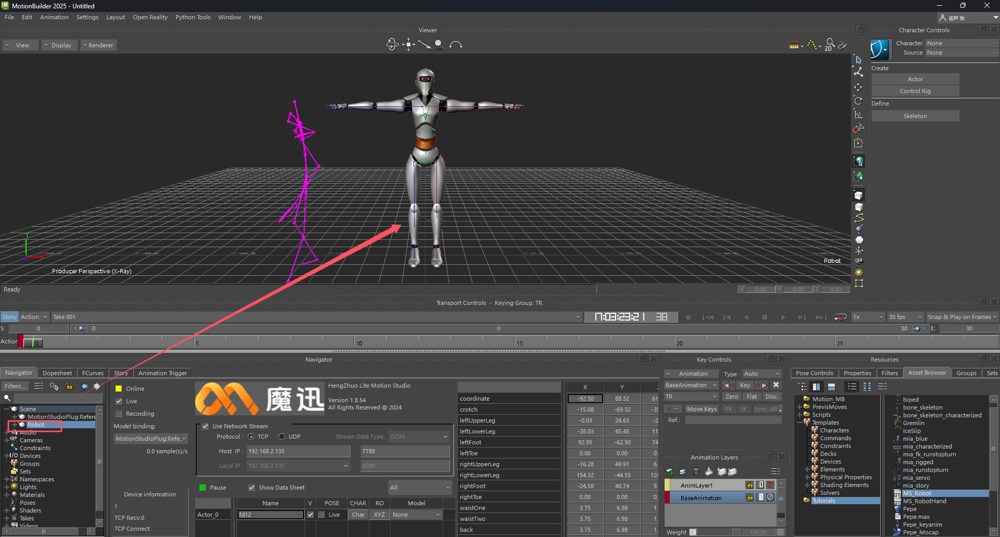{width="7.791666666666667in" height="4.188020559930009in"}
此时开启插件的网络连接，并勾选Live，然后创建好Model Binding后，可以在角色列表中的Model列看到场景中新导入的角色模型列表，选择对应的角色模型（注意不同角色要选择不同的模型），选中后模型和骨骼绑定在一起。
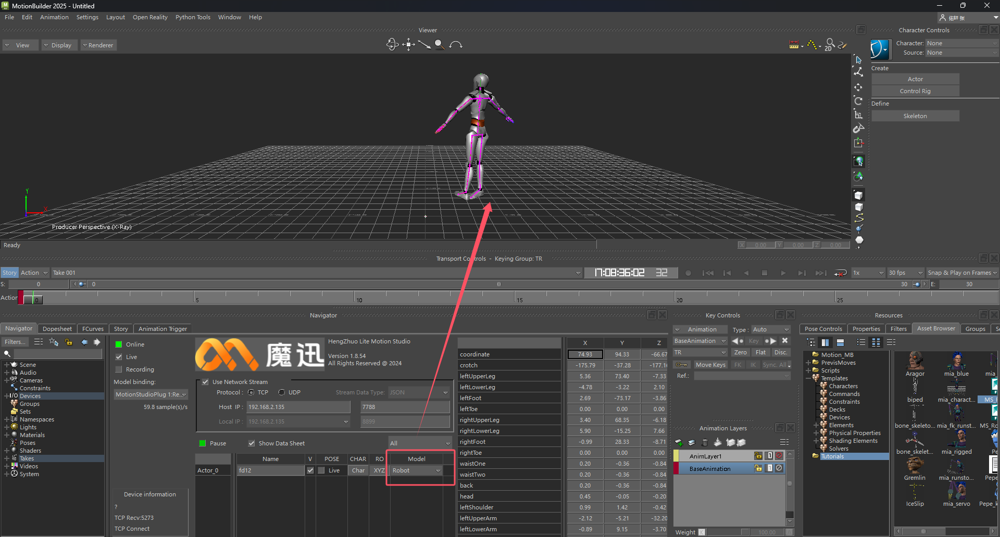{width="7.791666666666667in" height="4.188020559930009in"}
6）.直接驱动手部模型
MotionStudio实时串流手套数据或串流录制数据，MBip和端口填写正确后，点击online，重新勾选live，点击Model binding在下拉框中选择Create...，可显示手部骨骼。
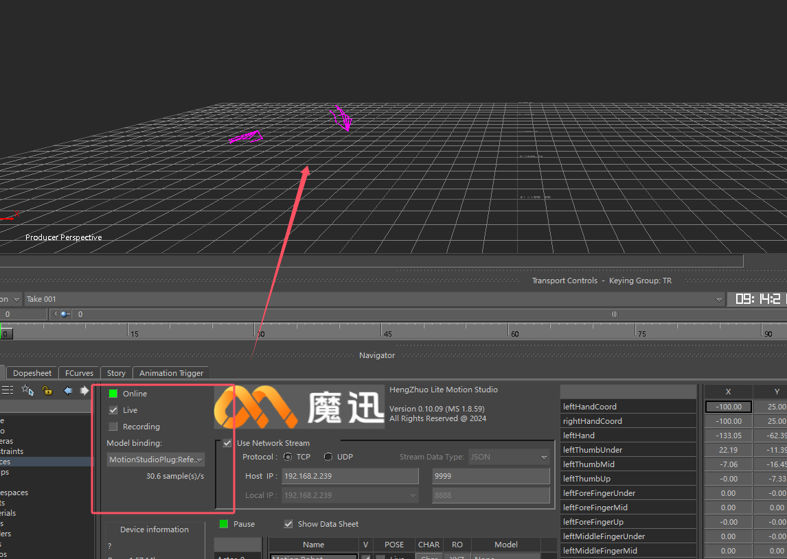{width="7.791666666666667in" height="5.541194225721785in"}
7）断开连接（切换数据源）
1当需要在MotionStudio中切换不同的数据源时，点击Online按钮，断开与MotionStudio连接。
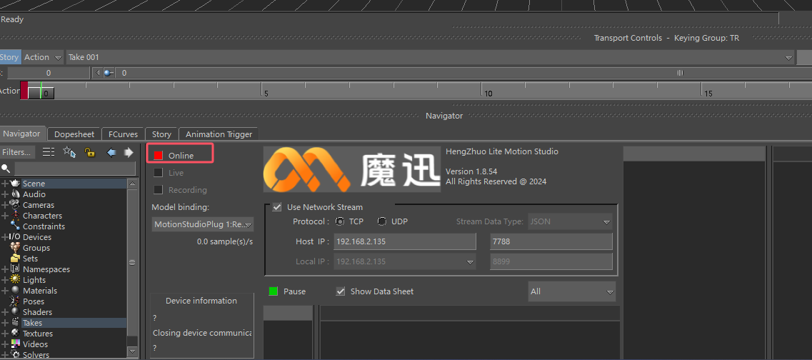{width="7.791666666666667in" height="3.4538254593175854in"}
2）在MotionStudio中切换数据源（添加、删除设备或切换录制文件）。
3）回到MotionBuilder中，点击Online开启实时数据，勾选Live选项，在Model binding下拉框中选择Create...，即可在MotionBuilder中切换为新的数据源（需要重新绑定模型）。
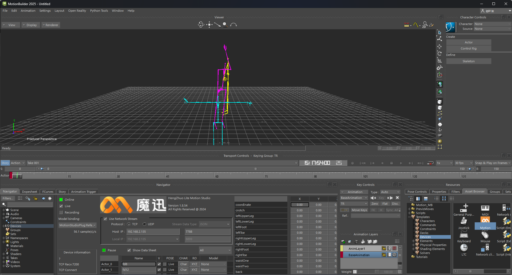{width="7.791666666666667in" height="4.189897200349956in"}
8）功能介绍
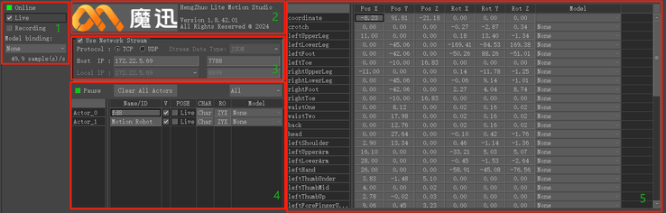{width="7.6875in" height="2.4583333333333335in"}
界面中区域1为连接设置，包括连接/断开按钮（Online），实时数据按钮（Live），录制（Recording）按钮，以及模型绑定下拉框（Model binding)。
区域2为插件信息，点击Logo图标可以打开官方网站。
区域3为网络设置，包括是否开启网络数据流（Use Network Stream)，网络协议（TCP或UDP），数据流类型（暂时不支持设置），MotionStudio主机IP及端口（TCP及UDP协议均需设置），本机IP地址及端口（仅UDP协议需设置，用于接收MotionStudio的UDP数据）。
区域4为角色设置，包括暂停/播放（Pause/Resume）按钮，清除角色按钮（Clear All Actors），显示部位下拉框(All/Body/Hand)，以及下方的角色列表。
区域5为数据区，包括每个关节的原始数据。
2.添加模型并重定向驱动
1）导入角色模型
导入任意带有标准人体骨骼的模型。可以使用MB自带的角色模型，例如在AssetBrowser→PrevisMoves中找到任意动作（这里以Dance为例）。在导入时选择FBX Merge→\<No Animation>，选择不导入动画。
在MB预制的动作文件列表PrevisMoves中选择任意动作，以Dance为例。
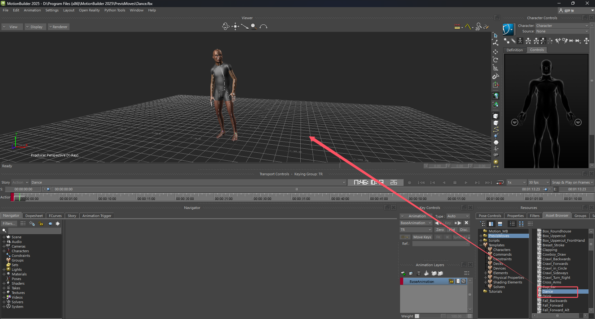{width="7.791666666666667in" height="4.188020559930009in"}
2）设置角色模型为T-Pose
在场景中按下Ctrl+W,可以显示骨骼大纲视图，然后框选Hips根骨骼下的所有骨骼。然后在Hips上右键选择Zero→Rotation，即可重置模型到T-Pose姿态。（仅适用于初始骨骼姿态为T-Pose的模型）。
 {width="7.6875in"
height="5.208333333333333in"}
{width="7.6875in"
height="5.208333333333333in"}
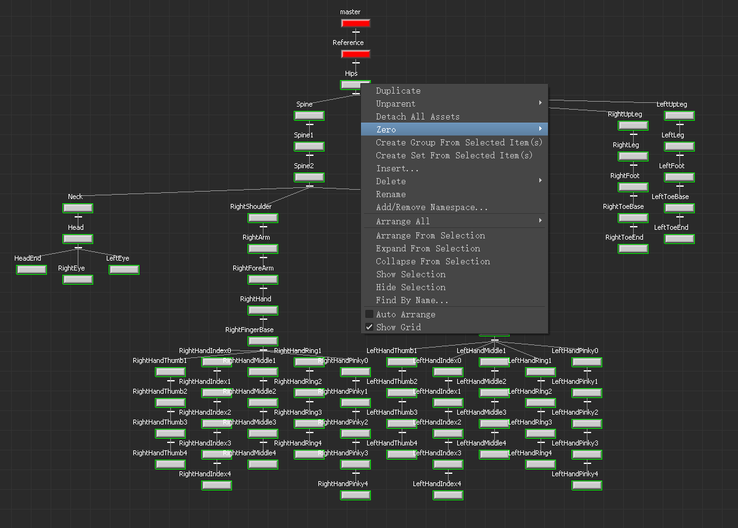{width="7.6875in" height="5.5in"}
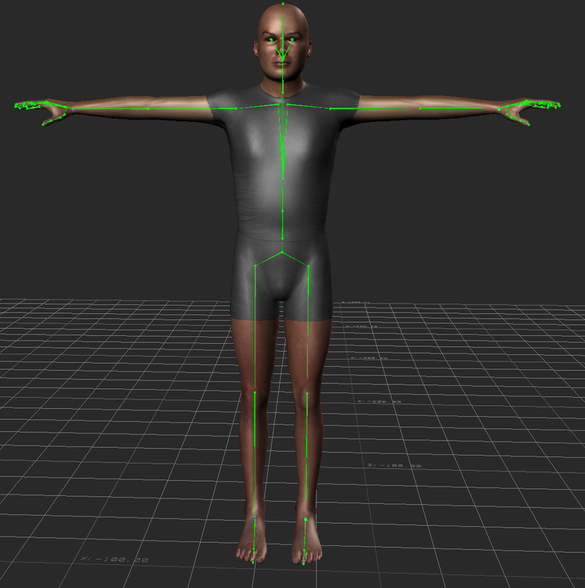{width="7.6875in" height="7.729166666666667in"}
再次按下Ctrl+W键，返回场景视图，可以看到角色模型已经为Tpose姿态。
3）为角色模型添加角色定义（Characterize）
一般情况下，刚才导入的角色已经包含了对应的角色定义。可以检查Navigator左侧列表中的Characters中是否已有角色定义。若有已有，则说明创建成功。也可以在Character Controls中检查是否创建了正确对应的角色定义。
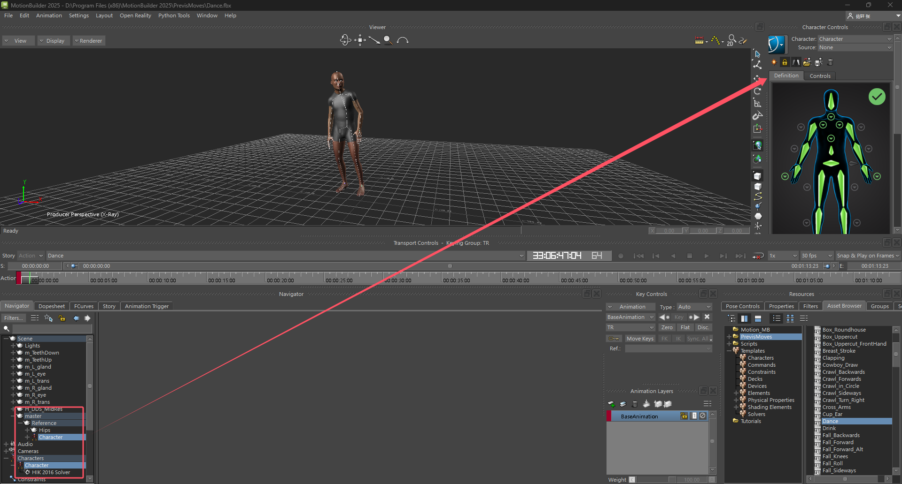{width="7.791666666666667in" height="4.188020559930009in"}
创建外部导入进来的模型或者角色定义有误
可以按照如下步骤创建新的角色定义，并映射到角色模型上。
1.导入任意带有标准人体骨骼的FBX模型。把外部文件拖进来，选择FBX Open→\<No Animation>，选择不导入动画
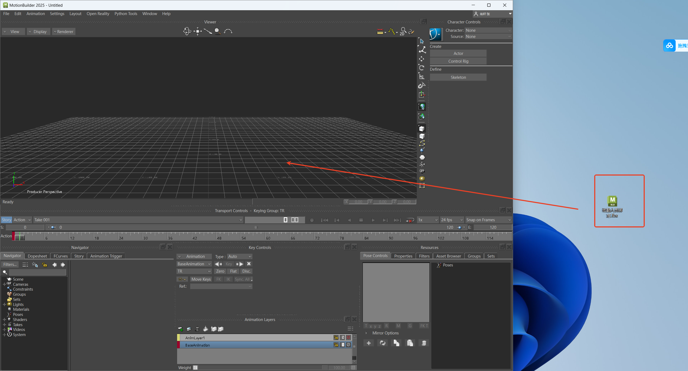{width="7.791666666666667in" height="4.200195756780403in"}
2.在Asset Browser面板中，选择左侧Templates→Characters，在右侧选择Character
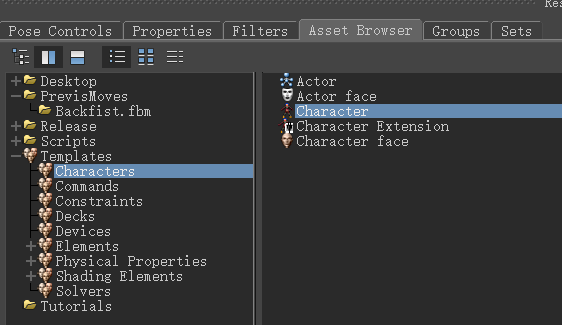{width="5.65625in" height="3.2709634733158355in"}
3.在场景中按下Ctrl+W切换为骨骼大纲视图，使用鼠标左键拖动上一步选择的Character到角色模型的根骨骼Hips上。
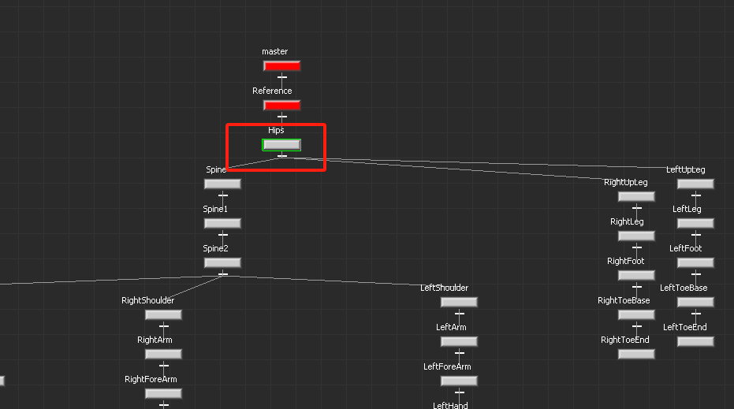{width="5.65625in" height="3.1531616360454944in"}
4.松开鼠标左键后，会弹出Characterize按钮，点击该按钮，然后在弹出的对话框中点击Biped按钮。
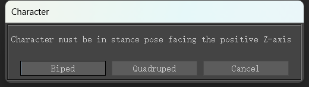{width="5.416666666666667in" height="1.5208333333333333in"}
4）导入插件并连接Motion studio
在页面右下角的Asset Browser 标签页中，选择左侧Templates→Devices，在右侧列表中找到Motion Studio Plug插件。鼠标拖拽该插件到主场景中即可完成导入。
{width="7.791666666666667in" height="4.188020559930009in"}
将Motion Studio插件拖到主场景中即可完成导入，点击Navigator---Devices中看到插件的界面。
{width="7.791666666666667in" height="4.2184569116360455in"}
点击查看是否勾选上Use Network Stream（若没勾选请手动勾选上）。根据MotionStudio中对应的数据广播设置，选择TCP或者UDP连接。
{width="7.791666666666667in" height="4.2184569116360455in"}
TCP连接：
使用TCP连接时，只需在Host IP中填入MotionStudio中的本地IP（默认为本机IP，若MotionBuilder运行环境与MotionStudio运行环境不在同一台电脑，则此处需根据MotionStudio的本地IP对应修改）及对应端口号。
{width="7.25in" height="3.3020833333333335in"}
{width="7.229166666666667in" height="6.96875in"}
UDP连接：
使用UDP连接时，需选择UDP，除以上操作外,还需要填写指定插件对应电脑的IP地址和端口号
{width="7.791666666666667in" height="3.2185181539807526in"}
在Motion Studio中的数据广播设置为UDP连接，并填写与插件相同的端口号（7788)。在目标IP处输入插件中的IP地址，并将端口设置为与插件中一致（默认为8899）
{width="7.791666666666667in" height="7.732935258092739in"}
在MS做完姿势校准或播放录制文件后，并在插件中确认ip设置正确，点击插件左上角Online，即可连接Motion Studio数据广播(如果遇到MotionBuilder崩溃，请重启MotionBuilder再尝试一下）。Online按钮为绿色则表示连接成功
{width="7.791666666666667in" height="4.2184569116360455in"}
连接成功后，点击Live按钮。
{width="5.177083333333333in" height="2.8020833333333335in"}
5）.绑定模型骨骼并创建角色定义
点击Model binding在下拉框中选择Create...
{width="7.791666666666667in"
height="4.163556430446194in"}
选择框中自动显示Motion studio Reference,并在场景中显示角色骨架
{width="7.791666666666667in" height="4.2184569116360455in"}
6）设置角色骨骼的角色化定义
- 在区域4中点击左上角Pause按钮暂停更新骨骼位置，并点击对应角色的Pose列的按钮切换骨骼为TPose姿态。
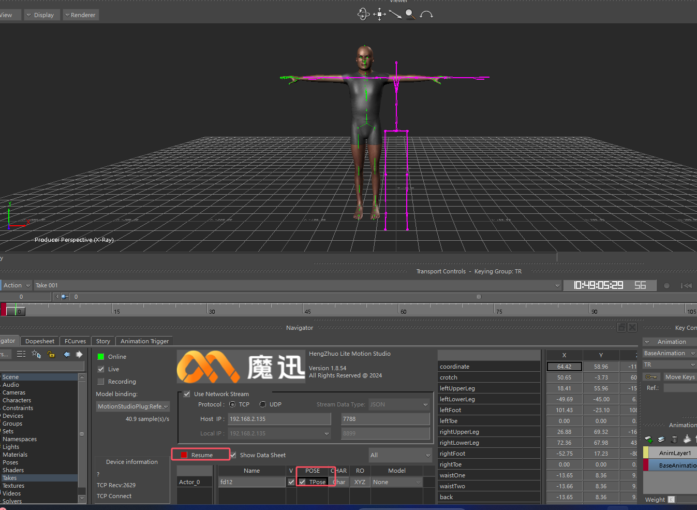{width="7.791666666666667in" height="5.697692475940507in"}
2.在区域4的角色列表中可以点击角色的CHAR按钮创建角色化定义实例(MSCharacter)。
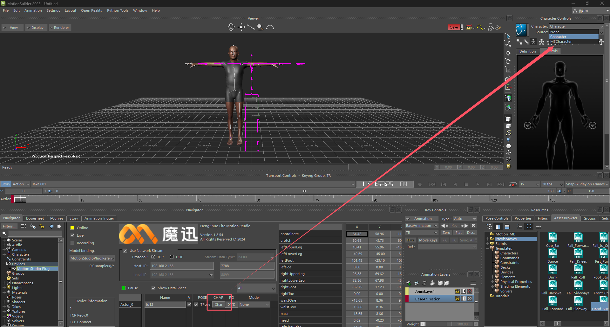{width="7.791666666666667in" height="4.188020559930009in"}
3.重新设置角色化。在Character Control面板中，依次选择新创建的角色定义MSCharacter，点击下方锁定按钮已解锁，然后再此点击该按钮，然后在弹出框中选择Biped。同理，也对导入的角色模型（Character）进行同样的操作。检查每个角色定义下的骨骼映射是否都显示为绿色。如不为绿色，则需要重新将骨骼旋转归零（Zero→Rotation）。
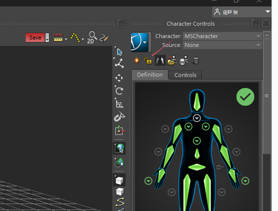{width="5.854166666666667in" height="4.447916666666667in"}
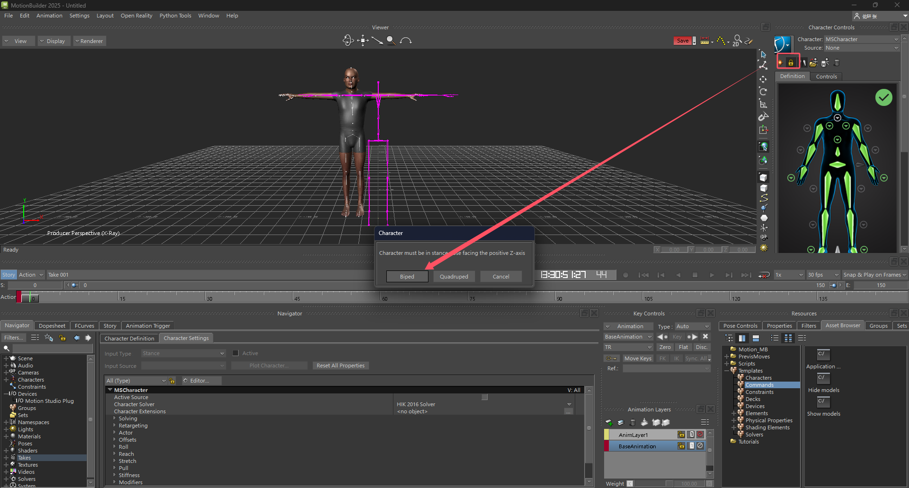{width="7.791666666666667in" height="4.188020559930009in"}
7）设置重定向源
此时可以在Character Control面板中，点击character下拉框，选择Character角色定义，然后点击Source下拉框，选择MSCharacter。
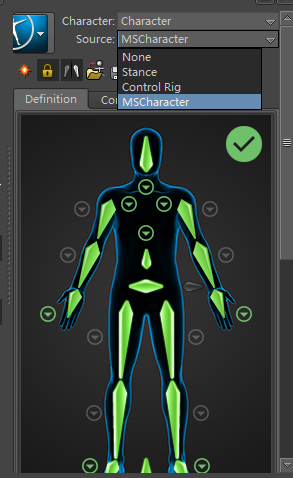{width="3.0520833333333335in" height="4.979166666666667in"}
至此，我们将插件绑定的骨骼与模型的骨骼完成了映射绑定后，取消T-pose展示和点击Pause按钮，在MS里面播放录制数据或传输实时数据，model会实时显示传播数据。
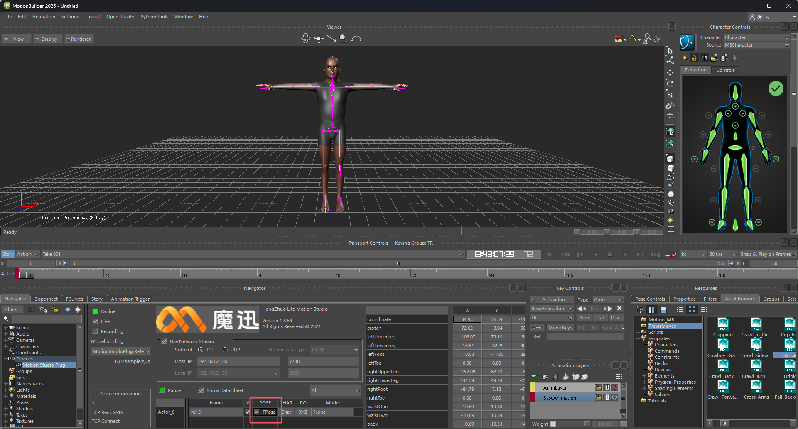{width="7.791666666666667in" height="4.189897200349956in"}
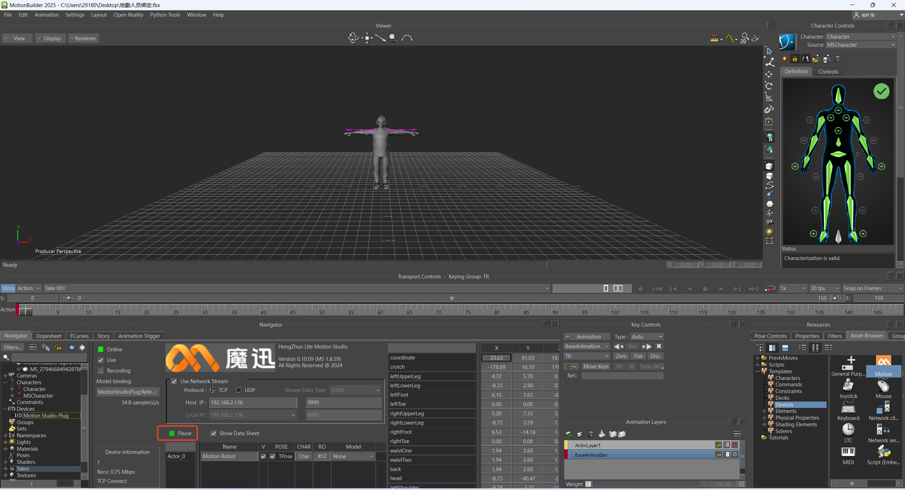{width="5.135416666666667in" height="2.7783409886264216in"}
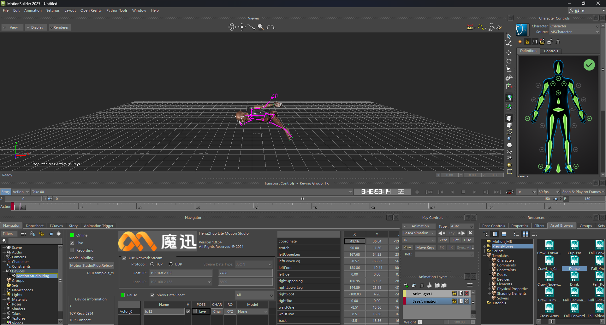{width="7.791666666666667in" height="4.188020559930009in"}
3.录制动画并保存
1）录制动画
在Online连接数据广播状态下，勾选Recording按钮可以准备开始录制动画。
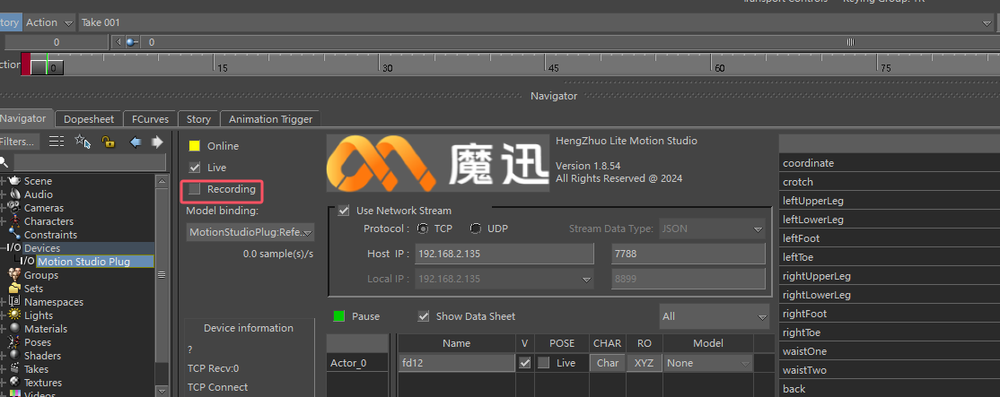{width="7.791666666666667in" height="3.098480971128609in"}
点击左侧录制按钮，根据需求可以覆盖当前动画序列或者创建新的动画序列。
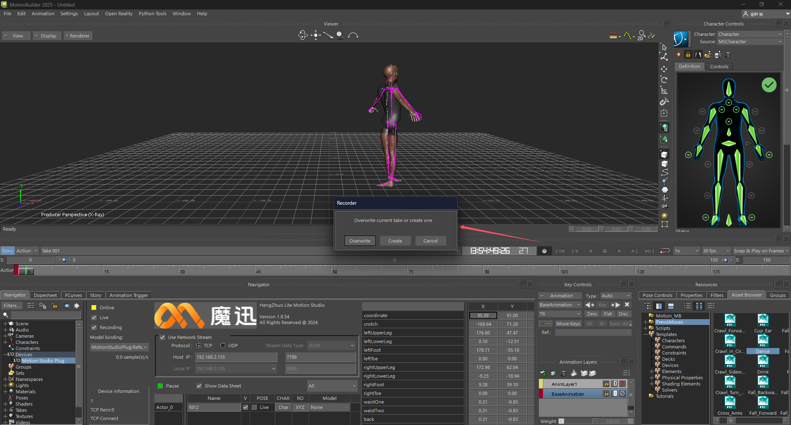{width="7.791666666666667in" height="4.188020559930009in"}
然后点击中间播放按钮，即可开始录制动画，再次点击播放按钮结束动画录制。
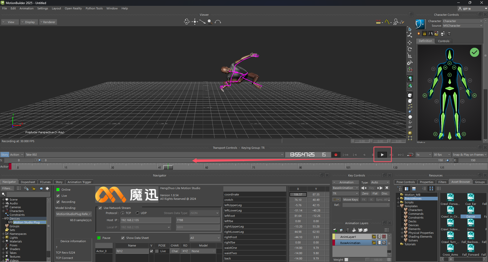{width="7.791666666666667in" height="4.188020559930009in"}
2）播放录制动画
断开online连接，点击播放按钮，能播放刚录制的数据。（断开连接后，模型将与骨骼断开连接，需再次重复上面的操作）
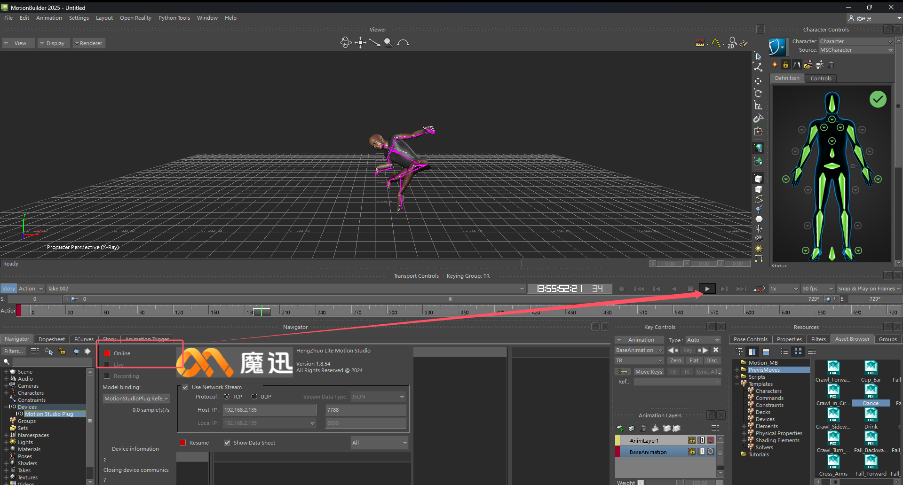{width="7.791666666666667in" height="4.188020559930009in"}
3）保存动画
在MotionBuilder菜单栏中选择File→Motion File Export...，然后选择要保存的目录以及文件名，点击保存按钮。
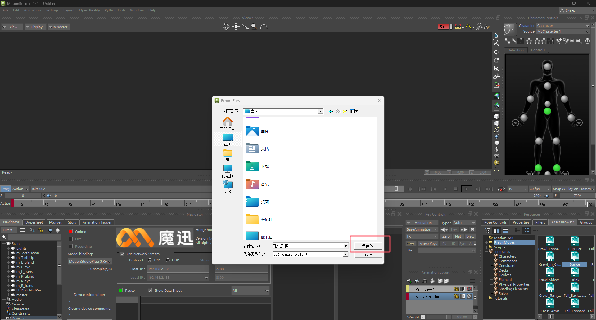{width="7.791666666666667in" height="4.188020559930009in"}
在弹出的导出选项中根据需要设置动画帧率（FrameRate），并勾选需要保存的动画Take，然后点击导出（Export）按钮即可保存录制好的动画到指定文件。保存完成后，可以将该文件再次导入到MotionBuilder中查看。
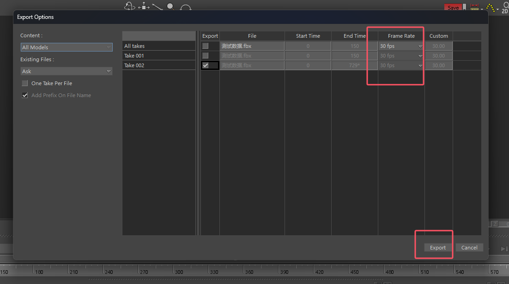{width="7.791666666666667in" height="4.362484689413823in"}